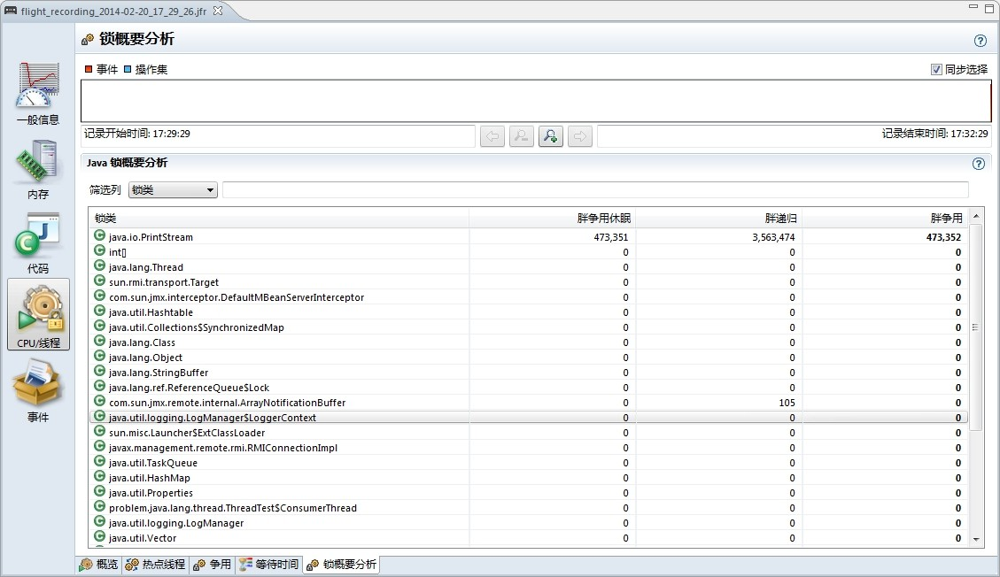

4.6 相关命令行参数
本节将会对与控制、分析JRockit中锁的行为相关的命令行参数做介绍。
尽管使用这些参数后可以从相关的日志文件中得到大量信息，但同步操作还是比较复杂的，推荐使用JRockit Mission Control套件来进行可视化的分析。
4.6.1 检查锁与延迟解锁
本节将会对控制相关锁的行为的命令行参数做介绍。
4.6.1.1 使用-Xverbose:locks参数分析锁的行为
使用参数-Xverbose:locks可以让JRockit打印出与同步操作相关的信息，其中大部分信息与延迟解锁相关，例如可以看到哪个类或哪些对象被临时或永久的禁用了，还可以看到延迟解锁是否一直按照最初设想运转正常。
下面使用参数-Xverbose:locks打印出了一些示例内容，在其中可以看到，某些类不适宜使用延迟解锁，因此在后续的执行中会被禁用：
hastur:SPECjbb2005 marcus$ java -Xverbose:locks -cp jbb.jar:check.jar spec.jbb.JBBmain -propfile SPECjbb.props >/dev/null
[INFO ][locks ] Lazy unlocking enabled
[INFO ][locks ] No of CPUs: 8
[INFO ][locks ] Banning spec/jbb/Customer for lazy unlocking.(forbidden 6 times, limit is 5)
[INFO ][locks ] Banning spec/jbb/Address for lazy unlocking.(forbidden 6 times, limit is 5)
[INFO ][locks ] Banning java/lang/Object for lazy unlocking.(forbidden 5 times, limit is 5)
[INFO ][locks ] Banning spec/jbb/TimerData for lazy unlocking.(forbidden 6 times, limit is 5)
[INFO ][locks ] Banning spec/jbb/District for lazy unlocking.(forbidden 6 times, limit is 5)4.6.1.2 使用参数-XX:UseLazyUnlocking
在不同的平台和不同JRockit版本中，默认是否是启用延迟解锁的设定不尽相同，请依据JRockit文档或根据-Xverbose:locks参数的输出来判断。虽然延迟解锁有时会自行退化为普通的锁操作，但大部分情况下，启用延迟解锁确实是可以提升系统性能的。
可以使用命令行参数-XX:UseLazyUnlocking=false或–XX:UseLazyUnlocking=true来显式控制是否启用延迟解锁。
最后，使用命令行参数-Xverbose:codegen可以打印出有哪些方法出现了锁操作不匹配的情况。
4.6.2 输出调用栈信息
向JRockit进程发送SIGQUIT信号可以使JRockit打印出JVM中所有线程（包括Java线程和本地线程）的完整调用栈信息，在类Unix系统上可以使用kill -QIUT <PID>命令或kill -3 <PID>命令发送SIGQUIT信号，在Windows系统上可以在控制台中按Ctrl-Break组合键发送SIGQUIT信号。在打印出的线程调用栈信息中，会带有相关锁的锁符号及类型信息，以便可以快速判断是否出现了死锁。
下面是线程调用栈的示例内容，其中包括了锁的持有者、锁的类型，以及锁在何处被获得等信息：
===== FULL THREAD DUMP ===============
Tue Jun 02 14:36:39 2009
BEA JRockit(R) R27.6.3-40_o-112056-1.6.0_11-20090318-2104-windows-ia32
"Main Thread" id=1 idx=0x4 tid=4220 prio=5 alive, in native, sleeping, native_waiting
at java/lang/Thread.sleep(J)V(Native Method)
at spec/jbb/JBButil.SecondsToSleep(J)V(Unknown Source)
at spec/jbb/Company.displayResultTotals(Z)V(Unknown Source)
at spec/jbb/JBBmain.DoARun(Lspec/jbb/Company;SII)V(Unknown Source)
at spec/jbb/JBBmain.runWarehouse(IIF)Z(Unknown Source)
at spec/jbb/JBBmain.doIt()V(Unknown Source)
at spec/jbb/JBBmain.main([Ljava/lang/String;)V(Unknown Source)
at jrockit/vm/RNI.c2java(IIIII)V(Native Method)
-- end of trace
"(Signal Handler)" id=2 idx=0x8 tid=1236 prio=5 alive, in native, daemon
"(GC Main Thread)" id=3 idx=0xc tid=5956 prio=5 alive, in native, native_waiting, daemon
"(GC Worker Thread 1)" id=? idx=0x10 tid=5884 prio=5 alive, in native, daemon
"(GC Worker Thread 2)" id=? idx=0x14 tid=3440 prio=5 alive, in native, daemon
"(GC Worker Thread 3)" id=? idx=0x18 tid=4744 prio=5 alive, in native, daemon
"(GC Worker Thread 4)" id=? idx=0x1c tid=5304 prio=5 alive, in native, daemon
"(GC Worker Thread 5)" id=? idx=0x20 tid=5024 prio=5 alive, in native, daemon
"(GC Worker Thread 6)" id=? idx=0x24 tid=3632 prio=5 alive, in native, daemon
"(GC Worker Thread 7)" id=? idx=0x28 tid=1924 prio=5 alive, in native, daemon
"(GC Worker Thread 8)" id=? idx=0x2c tid=5144 prio=5 alive, in native, daemon
"(Code Generation Thread 1)" id=4 idx=0x30 tid=3956 prio=5 alive, in native, native_waiting, daemon
"(Code Optimization Thread 1)" id=5 idx=0x34 tid=4268 prio=5 alive, in native, native_waiting, daemon
"(VM Periodic Task)" id=6 idx=0x38 tid=6068 prio=10 alive, in native, native_blocked, daemon
"(Attach Listener)" id=7 idx=0x3c tid=6076 prio=5 alive, in native, daemon
...
"Thread-7" id=18 idx=0x64 tid=4428 prio=5 alive
at spec/jbb/infra/Util/TransactionLogBuffer.privText(Ljava/lang/String;IIIS)V(UnknownSource)[optimized]
at spec/jbb/infra/Util/TransactionLogBuffer.putText(Ljava/lang/String;IIIS)V(Unknown Source)[inlined]
at spec/jbb/infra/Util/TransactionLogBuffer.putDollars(Ljava/math/BigDecimal;III)V(Unknown Source)[optimized]
at spec/jbb/NewOrderTransaction.processTransactionLog()V(Unknown Source)[optimized]
^-- Holding lock: spec/jbb/NewOrderTransaction@0x0D674030[biased lock]
at spec/jbb/TransactionManager.runTxn(Lspec/jbb/Transaction;JJD)J(Unknown Source)[inlined]
at spec/jbb/TransactionManager.goManual(ILspec/jbb/TimerData;)J(Unknown Source)[optimized]
at spec/jbb/TransactionManager.go()V(Unknown Source)[optimized]
at spec/jbb/JBBmain.run()V(Unknown Source)[optimized]
at java/lang/Thread.run(Thread.java:619)[optimized]
at jrockit/vm/RNI.c2java(IIIII)V(Native Method)
-- end of trace
"Thread-8" id=19 idx=0x68 tid=5784 prio=5 alive, in native, native_blocked
at jrockit/vm/Locks.checkLazyLocked(Ljava/lang/Object;)I(Native Method)
at jrockit/vm/Locks.monitorEnterSecondStage(Locks.java:1225)
at spec/jbb/Stock.getQuantity()I(Unknown Source)[inlined]
at spec/jbb/Orderline.process(Lspec/jbb/Item;Lspec/jbb/Stock;)V(Unknown Source)[optimized]
at spec/jbb/Orderline.validateAndProcess(Lspec/jbb/Warehouse;)Z(Unknown Source)[inlined]
at spec/jbb/Order.processLines(Lspec/jbb/Warehouse;SZ)Z(Unknown Source)[inlined]
at spec/jbb/NewOrderTransaction.process()Z(Unknown Source)[optimized]
^-- Holding lock: spec/jbb/Orderline@0x09575D00[biased lock]
^-- Holding lock: spec/jbb/Order@0x05DDB4E8[biased lock]
at spec/jbb/TransactionManager.runTxn(Lspec/jbb/Transaction;JJD)J(Unknown Source)[inlined]
at spec/jbb/TransactionManager.goManual(ILspec/jbb/TimerData;)J(Unknown Source)[optimized]
at spec/jbb/TransactionManager.go()V(Unknown Source)[optimized]
at spec/jbb/JBBmain.run()V(Unknown Source)[optimized]
at java/lang/Thread.run(Thread.java:619)[optimized]
at jrockit/vm/RNI.c2java(IIIII)V(Native Method)
-- end of trace
"Thread-9" id=20 idx=0x6c tid=3296 prio=5 alive, in native, native_blocked
at jrockit/vm/Locks.checkLazyLocked(Ljava/lang/Object;)I(Native Method)
at jrockit/vm/Locks.monitorEnterSecondStage(Locks.java:1225)
at spec/jbb/Stock.getQuantity()I(Unknown Source)[inlined]
at spec/jbb/Orderline.process(Lspec/jbb/Item;Lspec/jbb/Stock;)V(Unknown Source)[optimized]
at spec/jbb/Orderline.validateAndProcess(Lspec/jbb/Warehouse;)Z(Unknown Source)[inlined]
at spec/jbb/Order.processLines(Lspec/jbb/Warehouse;SZ)Z(Unknown Source)[inlined]
at spec/jbb/NewOrderTransaction.process()Z(Unknown Source)[optimized]
^-- Holding lock: spec/jbb/Orderline@0x09736E10[biased lock]
^-- Holding lock: spec/jbb/Order@0x09736958[biased lock]
at spec/jbb/TransactionManager.runTxn(Lspec/jbb/Transaction;JJD)J(Unknown Source)[inlined]
at spec/jbb/TransactionManager.goManual(ILspec/jbb/TimerData;)J(Unknown Source)[optimized]
at spec/jbb/TransactionManager.go()V(Unknown Source)[optimized]
at spec/jbb/JBBmain.run()V(Unknown Source)[optimized]
at java/lang/Thread.run(Thread.java:619)[optimized]
===== END OF THREAD DUMP ===============4.6.3 锁分析
JRockit可以对运行中的程序内的锁做详细的分析，但会产生一些性能开销，根据应用程序的具体情况不同 ，一般会增加3%或更多的开销。
For more information about analyzing lock profiling info, please see the chapters on JRockit Mission Control.
更多有关分析锁信息的详细内容，请检查第6章 JRockit Mission Control中的内容。
4.6.3.1 使用参数-XX:UseLockProfiling进行所分析
使用命令行参数-XX:UseLockProfiling=true可以让JRockit打印出Java应用程序将时间都花在了哪里，JRockit会对Java应用程序中的加锁和解锁操作进行监控，记录下何种条件下发生，以及发生的次数。使用命令行参数-XX:UseNativeLockProfiling=true可以打印出JVM内容对本地锁的使用情况，例如代码缓冲区的锁和垃圾回收器锁获取到的锁。
JRockit Mission Control可以用来分析应用程序运行过程中锁的使用情况，Java应用程序和JVM内部的锁都会有记录，记录内容包括作为瘦锁/胖锁/使用的次数，被不同线程竞争的情况，延迟解锁的使用情况等等。
下图是JRockit Mission Control中所分析标签页的截图：

译者注：书中的图实在看不清，自己整了一个。
有关如何获得更多相信内容，请参见JRockit文档。
4.6.3.1.1 JRCMD
作为JRockit JDK的一部分，命令行工具JRCMD也可以用来控制锁的相关分析。当启用了-XX:UseLockProfiling=true参数后，JRCMD可以对lockprofile_print和lockprofile_reset命令做出响应，分来用来打印锁性能计数器和清空控制台输出。
更多有关如何使用JRCMD的内容请参见第11章。
4.6.4 设置线程栈的大小
命令行参数-Xss可用于指定线程栈的大小，例如参数-Xss:256k用于将栈的大小设置为256KB。线程栈是每个Java线程内部专用的内存区域，线程可在其中存储程序执行状态。增加线程栈的大小没什么实际意义，除非是程序中有递归调用或者有大量的栈内局部信息存在。
不同的平台上，线程栈的默认大小不尽相同，具体指请参见JRockit文档说明。当程序运行时抛出StackOverflowError错误时，除非是程序中存在无限递归，否则一般情况下可以通过调大线程栈来解决。
4.6.5 使用命令行参数控制锁的行为
在JRockit中，可以使用命令行参数来控制锁的启发式算法。例如，使用参数-XX:UseFatSpin=false可以禁止在胖锁中使用自旋锁，否则默认是启用的；使用参数-XX:UseAdaptiveFatSpin=true可以启用自适应运行时反馈，以便调节胖锁中自旋锁的行为，否则默认是禁用的。
还有一些参数可用来调整延迟解锁、锁膨胀和锁收缩的行为，通常来说不必使用这些参数。为满足读者的好奇心，在第5章中会对JRockit中调节锁的小技巧做详细介绍，JRockit文档中也包含了所有可用的命令行参数。